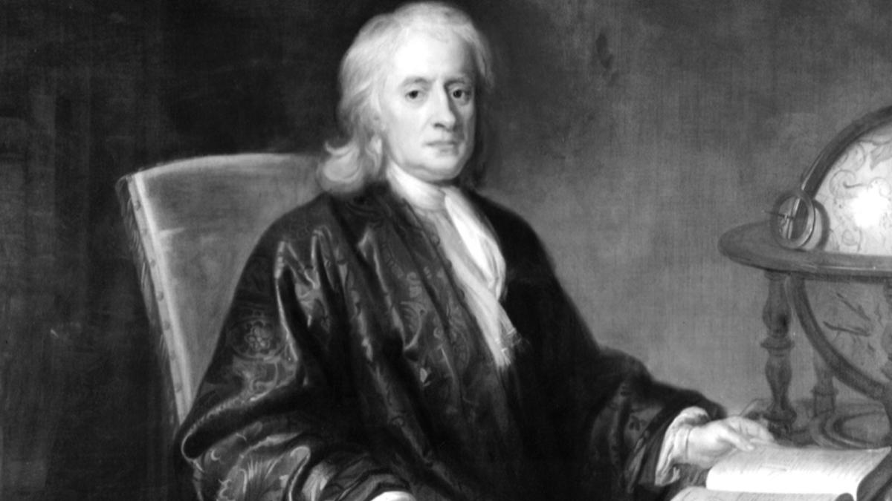
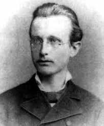

Notable Humans
Charles Darwin:

Charles Darwin is notable because he was the first human to figure out the exact
reason why species of biological organisms change and where new species come from. He called this process "natural selection". Darwin observed nature and saw that evolution was a simple dish with three ingredients: Heredity, time, and random mutations.
Over time environmental factors put pressure on a species by killing off members with unfavorable traits or unfavorable combinations of traits, and the survivors usually have traits that help their offsprint survive as well. Charles Darwin published his ideas in a book called "on the origin of species."
Charles Darwin finally figured out that animals and plants don't come about because an intelligent being hand designed them; it looked more like a pasta strainer with lots of interesting shapes being shaken by time inhabited by thousands of differently shaped pastas which changed over time.
His explanation made complete sense to anyone who even thought about it for more than one minute but many other humans in his time never even got farther than that.
Most of them were enthralled with a religion which didn't mesh well with Darwin's ideas. Of course, after a generation or two even most religious humans conceded to the obvious truth Darwin brought up.
Isaac Newton

Isaac Newton is notable for two reasons: Because he was the first human to even come close to figuring out how motion and gravity worked, and because he was hilariously insane. He was engrossed in the phony sciences of alchemy and astrology, yet his work helped the humans figure out how and why planets orbited the sun. He also liked to stare into the sun. He invented calculus to explain motion and acceleration. He also consumed a lot of mercury.
Max Planck

Max Planck is notable because he worked out most of the complexities involving extremely small objects. Before Planck, humans were content thinking that they had figured out all the laws of physics. In fact, Planck was even discouraged from studying physics by his peers because they believed that there would literally be nothing left for Planck to do. They were wrong. Planck's discoveries about the fact that energy comes in self-contained packets called quanta and the behavior of tiny particles turned physics upside down. He was so disruptive that humans still haven't resolved all the quirks in the field Planck uncovered.